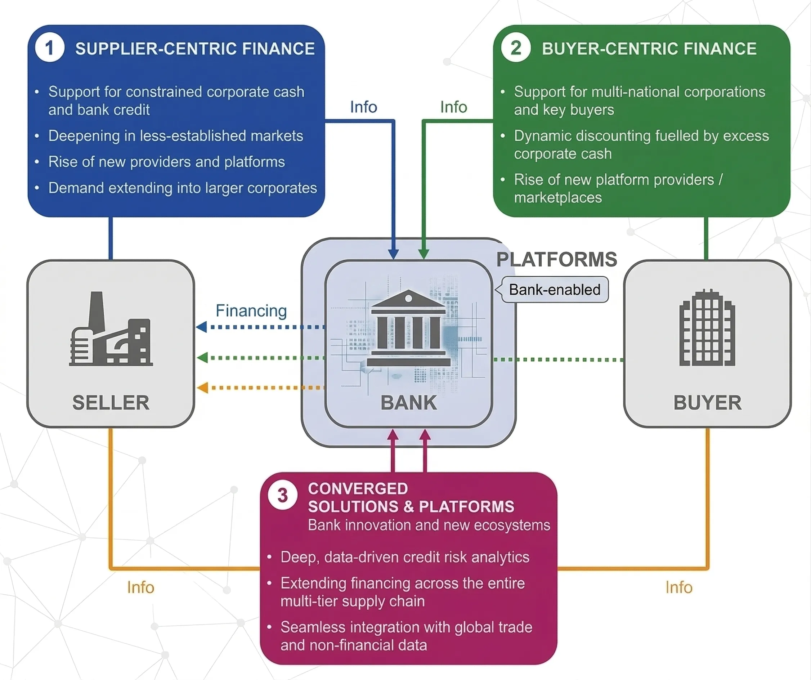
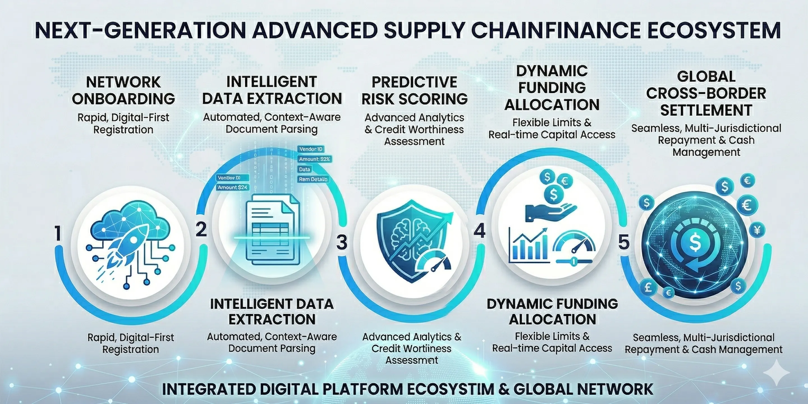

In today's rapidly evolving financial landscape, banks need to offer sophisticated and digitally-driven solutions to meet the complex needs of their corporate clients. Our advanced Supply Chain Finance (SCF) platform provides banks with an intelligent, digital-first solution to deliver truly buyer and supplier-centric financing, fostering stronger relationships and optimizing working capital across the supply chain.
Our solution is a next-generation, AI-enabled digital platform meticulously engineered for banks to provide comprehensive and tailored Supply Chain Finance solutions to their corporate customers. By leveraging the latest technological advancements, our platform enables banks to offer efficient, transparent, and intelligent financing options that cater to the unique needs of both buyers and their suppliers.


Ready to transform your bank's Supply Chain Finance offerings? Contact us today to explore how we can empower your institution and your corporate clients.